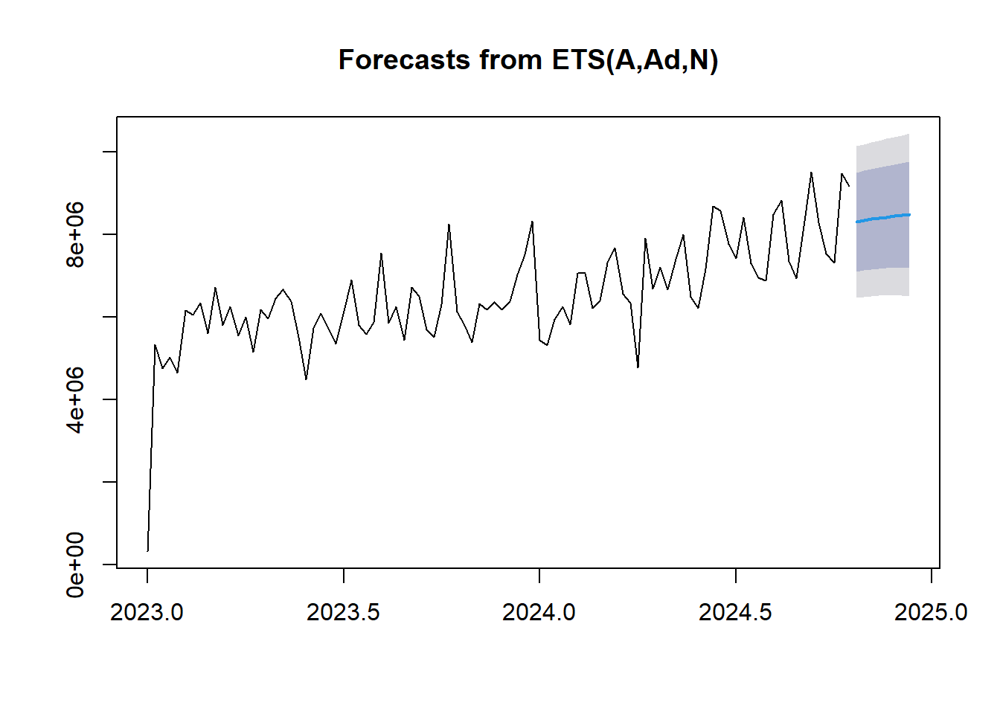

4 Holter-Winter
Aplicación de la metodología Holter-Winter y de suavizamiento a la variable tiempo
## Point Forecast Lo 80 Hi 80 Lo 95 Hi 95
## 2024.808 8309027 7109111 9508942 6473914 10144139
## 2024.827 8344366 7136206 9552525 6496645 10192086
## 2024.846 8375365 7157356 9593375 6512580 10238150
## 2024.865 8402558 7173207 9631909 6522429 10282688
## 2024.885 8426412 7184365 9668458 6526866 10325958
## 2024.904 8447336 7191384 9703288 6526524 10368149
## 2024.923 8465691 7194771 9736611 6521987 10409395
## 2024.942 8481792 7194983 9768601 6513788 10449796
ets para suavizamiento exponencial sin estacionalidad.
Este modelo predice la serie sin estacionalidad, pero aún permite capturar la tendencia de los datos a lo largo del tiempo, lo cual es adecuado si la serie es corta o no presenta patrones estacionales claros.